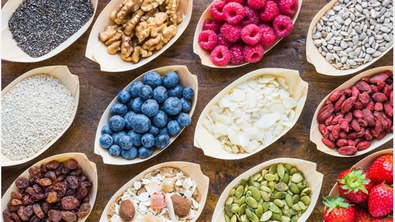
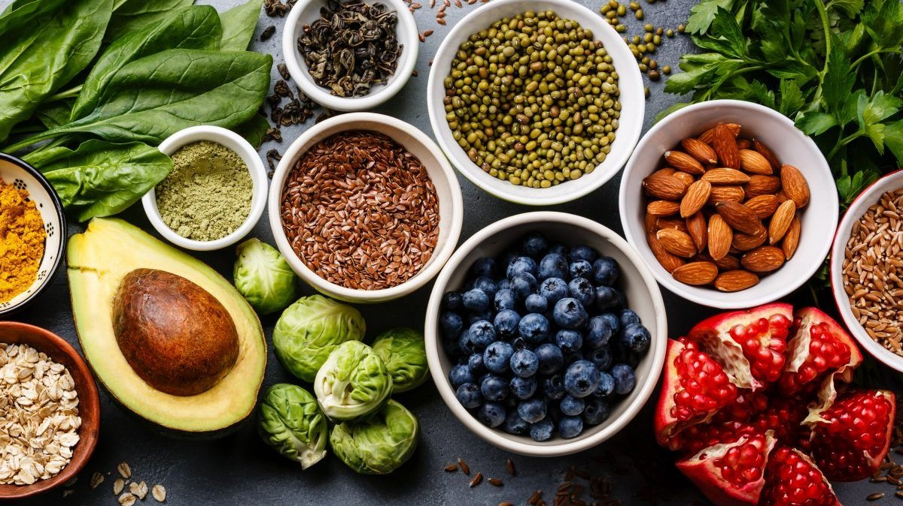
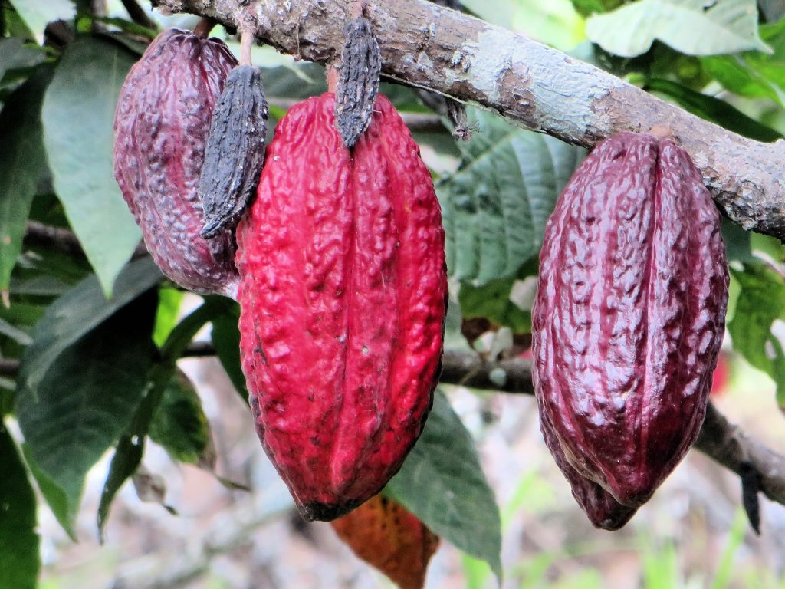

Superfood and Pandemic
by Pooja Bhatia
by Pooja Bhatia
During the pandemic in 2020, everything from corn flakes to shakes started promising immunity. The global health and wellness industry is estimated to be worth around 4.2 trillion dollars and represents 5.2% of the world's global output. The biggest sham
among these superfoods would be green tea and gluten-free products. The green tea market is worth 18.2 billion dollars. Even though green-tea claims to improve metabolism, nearly every local tea in the world can do so. As for
gluten-free products considered healthy, there is no need to fall for them unless you are gluten sensitive or have celiac disease. Gluten is a component of carbohydrates, which are equally healthy and essential for the body.
Less than 5% of the population in the UK has gluten problems, but 12% of the population has gone gluten-free. 1% of the population in America suffers from celiac disease. However, 20% consume gluten-free products. Gluten-free
products don't seem to help with weight loss, but they help you massively lose out on carbohydrate intake. An average gluten-free product is 242% more expensive than a product that contains the same variant.

The global market for gluten-free products will touch the 6.47 billion dollars mark in three years. By 2027, it will cross 43.65 billion dollars. Instagram influencers seem to claim that cow milk makes you fat. The advantage, you ask. Well, so that products
like almond and soy milk reach your refrigerators. The almond milk market would grow and reach 13.3 billion dollars by 2025 and soy milk by 23.2 billion dollars. However, there is no substantial proof or research to show that
soy or almond milk is healthier than cow milk. Regarding protein density and nutrient content, cow milk has the upper hand in the race. Unless you are a vegan or are lactose intolerant, there is no need to purchase soy or almond
milk. YouTubers believe protein powder containers (as heavy as dumbbells and cost as much as gold) are a healthy alternative. Why? Because they get paid to say so! You should consume protein powder drinks only if you fail to
reach the daily protein intake, i.e., 46 grams for women and 56 grams for men. The daily protein intake can be reached by consuming eggs, milk, nuts, chicken, and soy chunks. The protein powder market has reached the 5.2-billion-dollar
market. Hence, the choice is yours if you want to spend a fortune consuming these 'healthy' drinks. Brown alternatives like rice, sugar, bread are more popular than white options. Nutrition-wise, the difference between brown
and white rice is negligible. However, MRP-wise, the difference is hefty.

Healthy, low-fat snacks, baked not fried, low Cal, cholesterol-free, air fried, etc., are nothing but a gimmick to attract consumers. Many low-fat snacks have added sugar. Companies conceal these unhealthy ingredients under the garb of technical names.
For instance, in Europe, it isn't easy to find MSG in the ingredients list. However, it is named E621, and carrageenan is called E407. Many ready-made yogurts contain as much sugar as a candy bar. The protein bars, too, contain
many unhealthy ingredients like vegetable chips that are equally bad as potato chips. Vitamin Water, considered healthier than soda, contains eight teaspoons of sugar.

Advertising, packaging, advice can all be bought. During the 1960s, the sugar industry downplayed the risk of sugar and painted fat as the devil. A company named POM paid 35 million dollars to prove that POM Industries' products prevent the risk of heart
diseases and prostate cancer. Coca-Cola paid researchers to prove that exercising rather than cutting down on food and drinks would help achieve weight loss. Influencers make 200-650 dollars per post to promote these products.
All you get is 'orthorexea,' which means an obsession with eating healthy food. Social media marketing for these products is a danger to public health and the livelihood of local communities. Home food is the only food that
can be considered a superfood, and if you genuinely want to be healthy, eat a balanced diet and cut down on your calories. Food is not your enemy, but self-doubt and false advertising are.